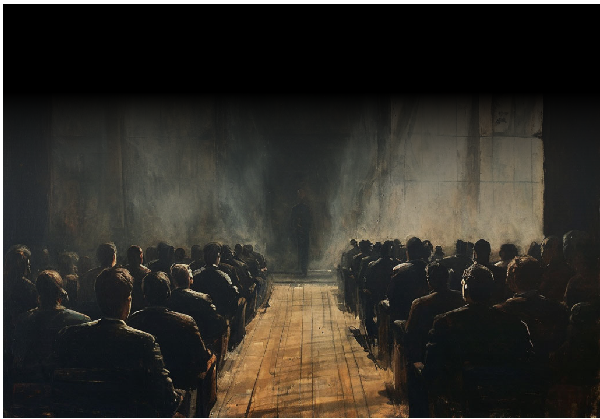
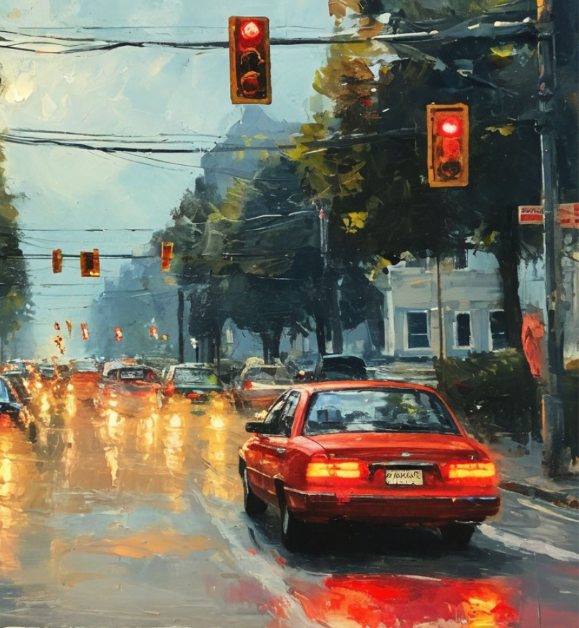
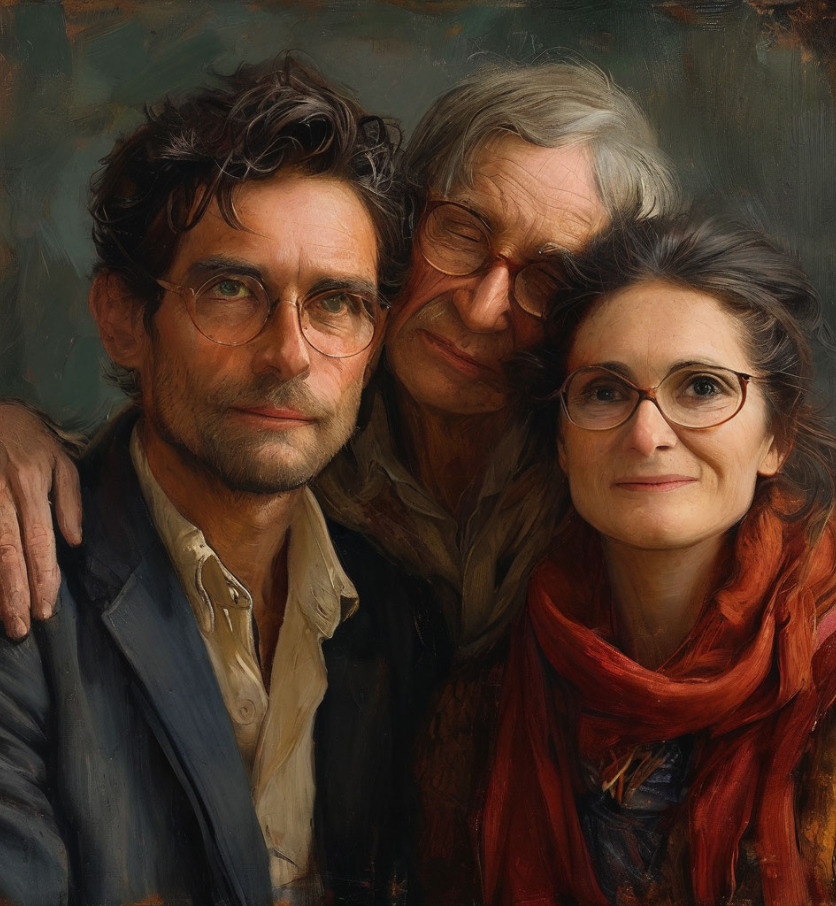

Если твой день рождения приходится на среду, приготовься: тебе предстоит много путешествий, много поездок, много обучения.
Среда

На твою голову свалится болышой объём информации и даже, если ты давно вышел из возраста ученика, возможно, придётся учиться чему-то новому, либо кого-то учить или обучать, что тоже будет создавать новые социальные связи, взаимодействие с окружающими людьми и необходимость осваивать какие-то новые для тебя навыки.
Актуальные будут ситуации, связанные с транспортом, с автомобилем, с любыми средствами перемещения, передвижения. Даже если нет желания осваивать четырёх колёсного друга, может появиться желание завести самокат или велосипед, или хотя бы научиться на них кататься.


Всё, что связано с отношениями с родственниками, будет в фокусе и фоном года. Родственники могут задавать темп этому году в зависимости от того, какие ситуации будут в их жизни, ты вынужден будешь подстраиваться под их темп и под их обстоятельства.
Также могут складываться ситуации переезда, покупки нового транспортного средства, покупки телефона, смена телефона, смены адреса проживания. Если у тебя съёмное жильё, то может быть несколько переездов в течение года, как минимум два наиболее вероятны. Ключевые и очень важные знакомства с людьми, которые в дальнейшем могут сыграть большую позитивную роль в профессиональном аспекте.
Для тебя могут поменяться ситуации в работе в лучшую сторону. Могут происходить какие-то переводы на работе, а также переход с одного места работы на другое место работы. Это темы, которые будут фоном в течение всего года создавать настроение и событийный ряд. Постарайся быть как можно более коммуникативным, больше общаться, больше, передвигаться, перемещаться. Заведи привычку гулять, хотя бы несколько минут в течение дня для того, чтобы энергии года были благосклонны.